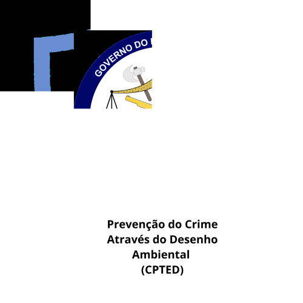

Bem vindo ao Help City CPTD: Uma plataforma para Análise territórial, Integração de Dados e Inteligência Artificial para a Gestão da Segurança Pública.

Legenda
Limites Taguatinga
Linha do Metrô
Estações
Estacionamentos
Parques
Zonas com altos índices de Furtos em veículos| PCDF
Zonas com muitos acidentes | DETRAN DF
Pontos de Desordem Urbana